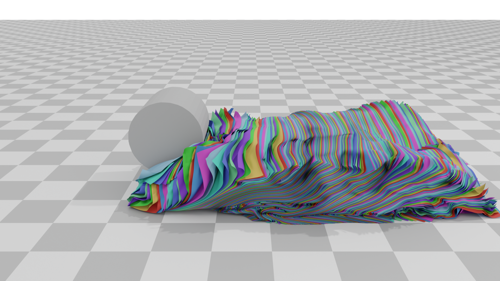

We introduce Divide and Truncate (DAT), a unified framework for penetration-free and inversion-free contact resolution in coupled multi-physics simulations. Our method accommodates a wide range of object types — including rigid bodies, soft volumetric objects, thin shells, rods, and animated elements — by dividing space into distinct zones and limiting movement within those boundaries to ensure penetration-free contact resolution.
We further present Planar-DAT, a refined variant that restricts only motion directed toward contact surfaces while allowing unrestricted tangential movement, addressing previous limitations involving artificial damping and system deadlock. DAT operates independently of material properties and can be applied as a post-processing step with any iterative optimizer, enabling efficient and robust simulation of complex multi-body interactions.
DAT is integrated into the VBD solver of Newton, the open-source GPU physics engine for robotics and physical AI that NVIDIA is developing together with the community. The VBD solver is a descendant of our Vertex Block Descent and Offset Geometric Contact work; DAT adds penetration-free and inversion-free contact handling on top of it, so you can use it in production simulations today.

@inproceedings{ankachen_2026_DAT,
author = {Chen, Anka He and Hsu, Jerry and Ayman, Youssef and Macklin, Miles},
title = {Divide and Truncate: A Penetration and Inversion Free Framework for Coupled Multi-physics System},
year = {2026},
publisher = {Association for Computing Machinery},
address = {New York, NY, USA},
url = {https://doi.org/10.1145/3799902.3811143},
doi = {10.1145/3799902.3811143},
booktitle = {Proceedings of the Special Interest Group on Computer Graphics and Interactive Techniques Conference Conference Papers},
articleno = {153},
numpages = {10},
series = {SIGGRAPH Conference Papers '26}
}